♩ Vokální sextet · Pardubice · od roku 2022 ♩
Jsme pěvecké šestičlenné uskupení, které působí na pardubické hudební scéně již od roku 2022.
Při našich koncertech si zakládáme na příjemné atmosféře, kterou vytváříme tím, že jsme především přátelé a až na druhém místě kolegové.
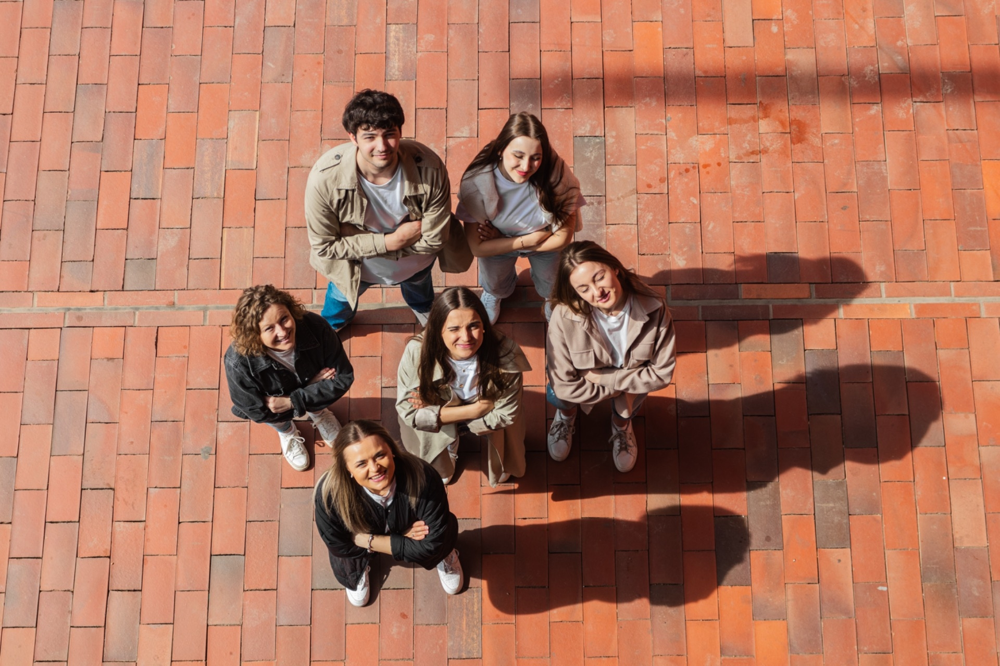
Jsme pěvecké sexteto, které spojila hlavně radost z hudby a chuť zpívat. Dali jsme se dohromady pod střechou ZUŠ Pardubice Havlíčkova 925, kde spolupracujeme pod uměleckým vedením Mgr. Zdeňky Grossové.
Můžeme nabídnout široký koncertní repertoár plný jak českých, tak i zahraničních písní všech žánrů. Vystupujeme především za klavírního doprovodu, ale u větších projektů rádi hudební doprovod rozšiřujeme i o jiné nástroje. Baví nás tvořit hudební projekty, které Vám dále rádi předáváme.
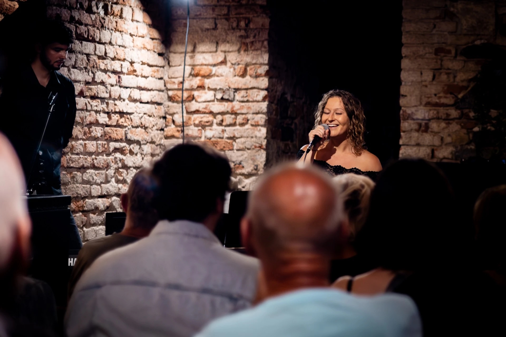
Naše Ádys vystudovala molekulární biologii a biochemii na Univerzitě Karlově, takže pokud mluví o buňkách, raději jen přikyvujeme. Od malička se věnuje tanci, miluje spánek, yogu a kávu, která je nedílnou součástí jejího starter packu hlavně ve zkouškovém období. Vysoké tóny, které na našich vystoupeních uslyšíte, má na svědomí právě Ádys. Ty nejvyšší z tónů ovšem slyší už jen zvířata.
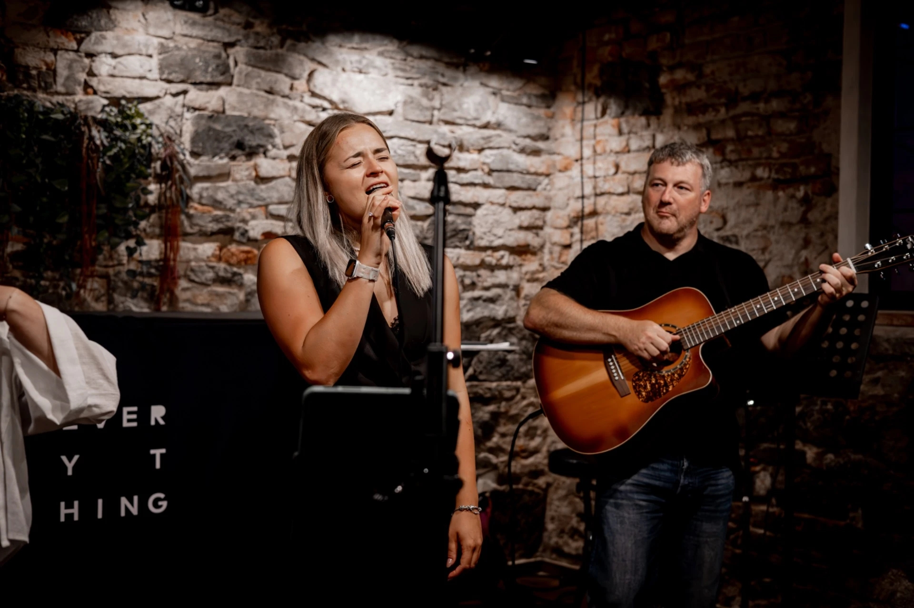
Hudba Áju provází od velmi útlého věku, kdy svou hudební kariéru odstartovala v pěveckém sboru a později k ní připojila hru na vícero hudebních nástrojů. Ačkoliv se k sólovému zpěvu se dostala až ve svých čtrnácti letech, byl pro ni jasnou volbou a stal se její nedílnou součástí. Ája pracuje jako paní učitelka v mateřské školce a tím se jí podařilo propojit dvě největší záliby, a to hudbu a práci s dětmi. Hudba je pro ni životní radostí, kterou může díky své práci denně sdílet se svým okolím v různých podobách.
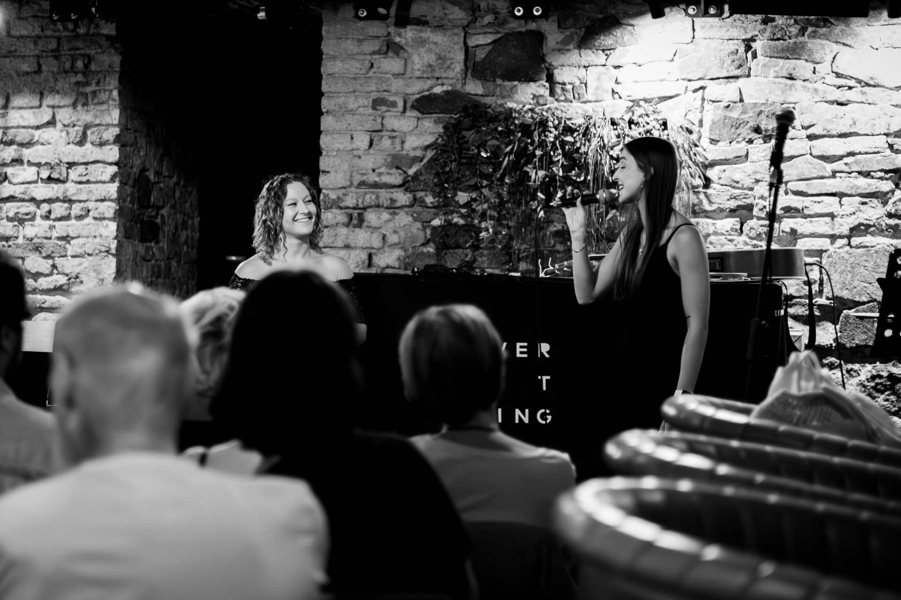
Berta je dcerou z rodu Vikingů a vyznavačů tatoo umění. Studuje na vysoké škole sociální patologii a prevenci. Její volba oboru byla dána hlavně tím, že její dlouholetou zálibou je true crime. Kromě studií se nyní aktivně věnuje práci koordinátorky zdravotní péče. Stala se taktéž v posledních letech baristkou, takže se za barem cítí stejně pohodově jako na pódiu. V budoucnu by se chtěla zabývat sociální prací a psychoterapií, ale v srdci samozřejmě bude vždy baristkou. Když ji zrovna nepotkáte na koncertě či v kavárně, tak ve svém volnu cvičí, čte si, opečovává svého kocoura Vincenta a samozřejmě také zpívá.
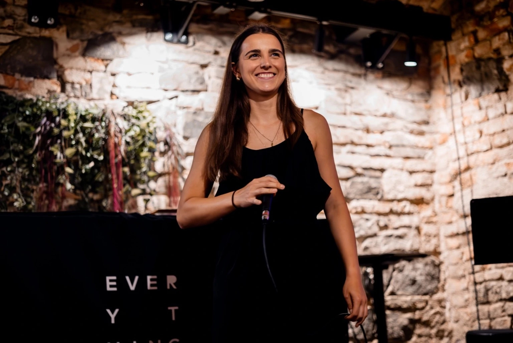
Áďa se hudbě taktéž věnuje od malička, ale původně začínala s hrou na klasickou kytaru. Zpěv přidala až později a nyní se mu věnuje naplno. Nyní se za kytaru jen příležitostně schovává na pódiu. Pochází z rodiny lékařů, ale rodinné řemeslo úplně nepřevzala, a tak se věnuje studiu práva v Olomouci. Když se zrovna neučí, dohání spánek a sportuje - hlavně běhá a leze po horách. Třeba se s ní jednou potkáte u rozvodového řízení v soudní síni, tak opatrně.
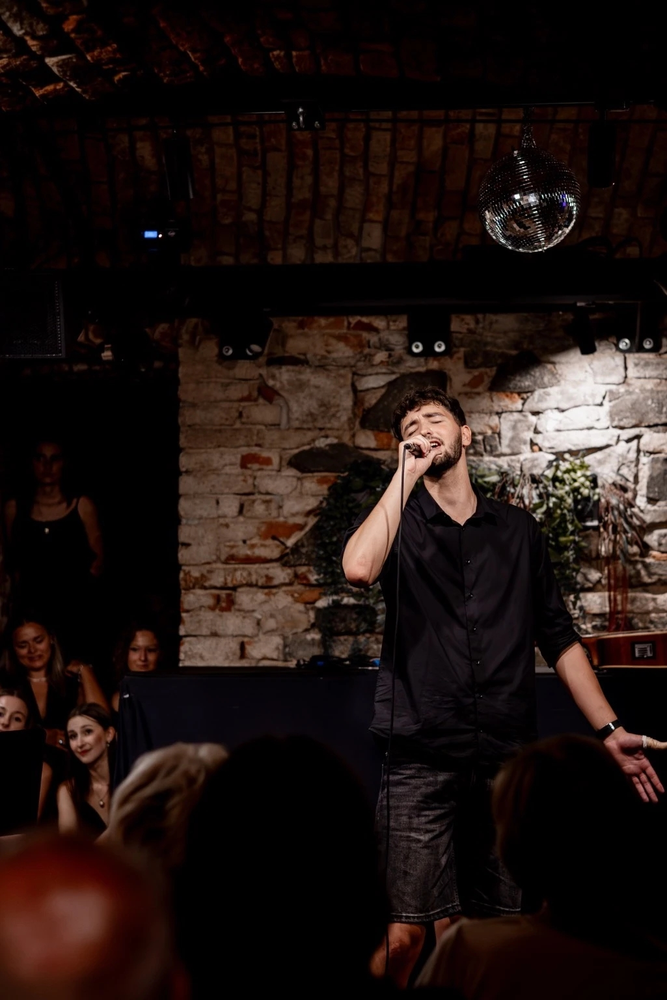
Káťu provází hudba a celkově umění od dětství – od baletu přes hru na klavír až po zpěv, který se stal nakonec její největší vášní. Studuje na vysoké škole v Praze obor bezpečnostní management a volný čas vyplňuje prací v kavárně nebo procházkami v přírodě se svým anglickým setrem Artushem. Zpívání je pro ni srdeční záležitost, ať už při sólovém vystupování nebo v rámci sexteta. Hudba pro ni zůstává tím nejkrásnějším relaxem i radostí.
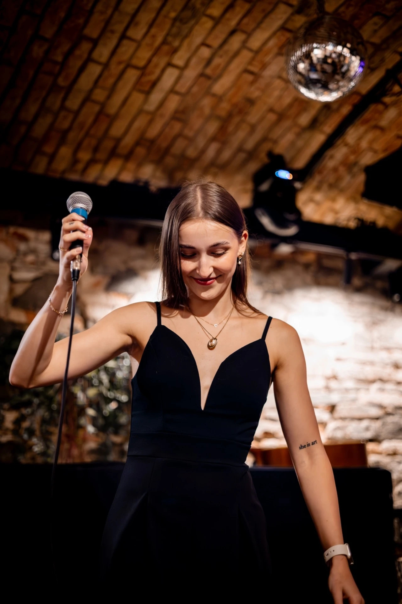
Matěj je jediným zástupcem mužského hlasu a zároveň nejmladším členem našeho pěveckého seskupení. Studuje na Masarykově univerzitě v Brně obory sociologie a soudobé dějiny. Zároveň jej můžete potkat v baru Everything, kde vám jakožto zkušený barman namíchá drink dle Vašeho gusta. Ve svém volnu rád čte poezii, zajímá se o architekturu a protože je opravdu renesanční člověk, tak i sportuje - badminton a fitness centrum mu jsou nejbližší. Z celého sexteta nosí nejlepší svetry a často svými hlasovými zprávami prolamuje rádiové ticho. Matějův sametový baryton je pro Gmajor6 nepostradatelnou součástí stejně tak, jako jeho smysl pro humor a energie, která rozezní i ticho mezi tóny.
Hlasová poradkyně a pedagožka zpěvu na ZUŠ Pardubice, Havlíčkova 925. Současně také příležitostná korepetitorka. V její třídě jsme našli první společné tóny a právě tam se zrodilo naše uskupení.
Výjimečný varhaník, klávesista a pedagog. Působí na Konzervatoři v Pardubicích, je členem populární kapely Sto zvířat a koncertuje také jako sólista.
Pardubický klavírista, akordeonista, skladatel a pedagog. Působí hned v několika hudebních projektech, například v chlapeckém sboru Bonifantes, Chanson Trio Coucou, Beerberries a dalších.
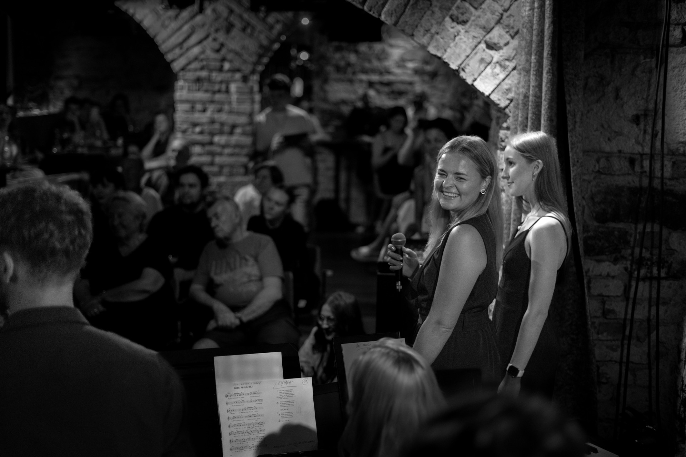
Dojemná živá hudba, která podtrhne atmosféru vašeho výjimečného dne.
Zpíváme na svatebních obřadech i během gratulací a vytváříme jemnou, elegantní a emotivní atmosféru. Vybereme společně písně, které k vám nejvíce promlouvají — ať je to moderní pop, filmová hudba nebo klasika. Postaráme se o profesionální zvuk, ladnost projevu a hudební doprovod, na který budete vy i hosté ještě dlouho vzpomínat.
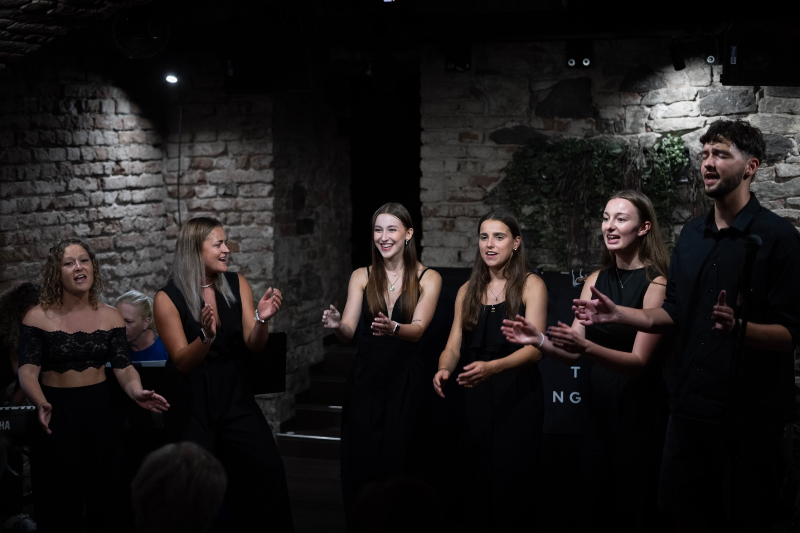
Energický koncertní program, který vtáhne publikum od první noty.
Nabízíme koncerty na kulturních akcích, festivalech i v komorním prostředí. Vystupujeme s rozmanitým repertoárem — od moderních úprav známých hitů až po muzikálové a filmové skladby. Každé vystoupení ladíme podle charakteru akce, prostoru i diváků. Přinášíme profesionální zvuk, dynamiku, souhru a opravdový hudební zážitek.
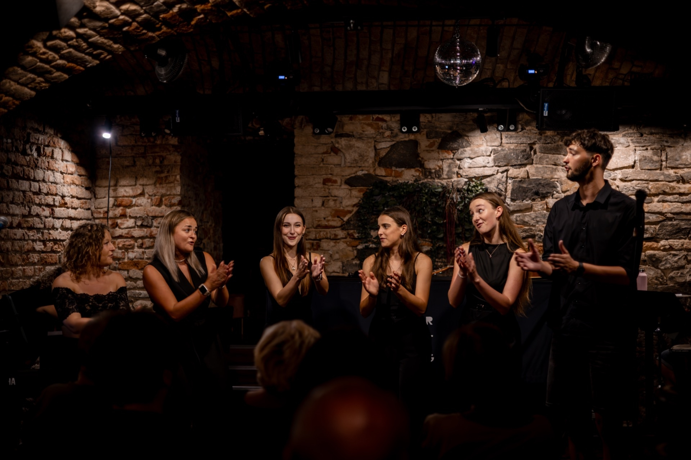
Stylové hudební zpestření pro plesy, večírky, firemní eventy i slavnostní příležitosti.
Hudebně doprovodíme jakoukoliv společenskou událost — od firemního večírku přes ples až po slavnostní otevření či galavečer. Dokážeme vytvořit příjemné pozadí i energickou show, která upoutá pozornost hostů. Spolehlivý průběh, profesionální zpěv a reprezentativní vystupování jsou samozřejmostí.
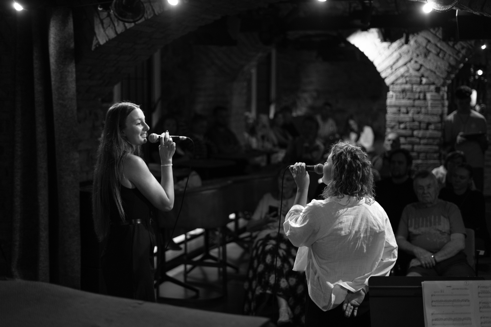
Kouzelná vánoční atmosféra s repertoárem plným známých adventních písní a zimních melodií.
V období Vánoc připravujeme speciální tematický program — české a světové koledy, moderní vánoční písně i jemné zimní skladby. Vystupujeme na rozsvěcení stromku, adventních trzích, firemních akcích i vánočních setkáních. Naše hudba dodá akci hřejivou a slavnostní atmosféru, která potěší děti i dospělé.
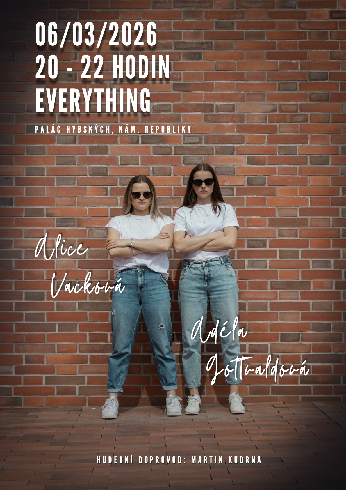
Další akce průběžně přidáváme — sledujte nás na sociálních sítích.
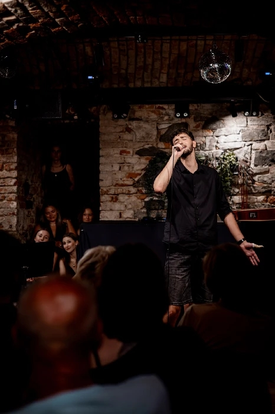
Měli jsme tu možnost v úterý 13. května 2025 hudebně doprovodit předávání cen města Pardubice.
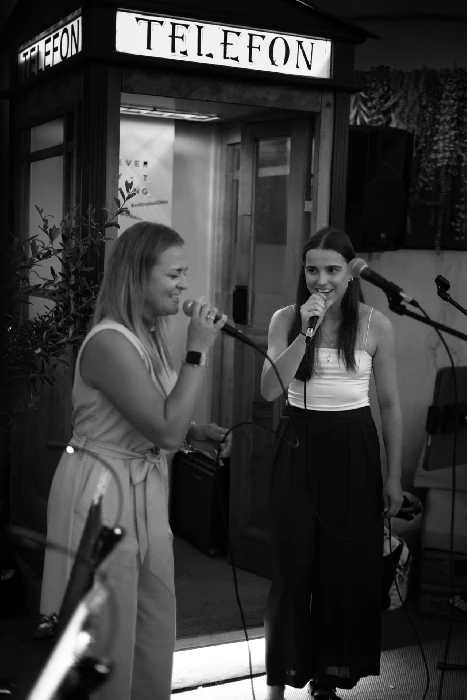
V létě jsme vystupovali i v Kitchenery, bistru v pasáži sv. Jana se streetfoodovým šmrncem, vlastní pekárnou a výběrovkou.
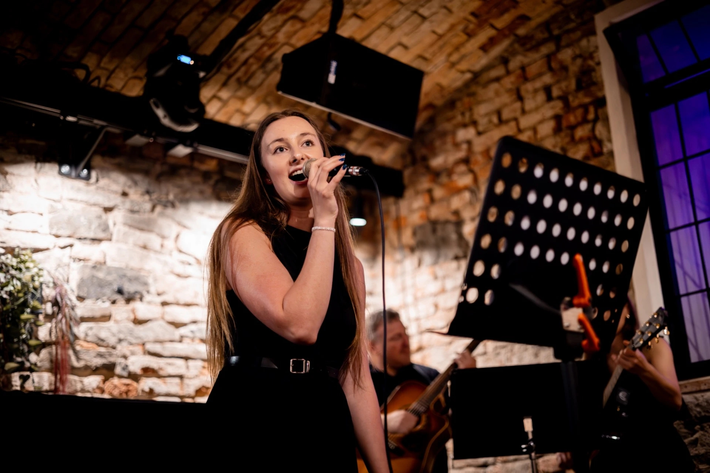
V sobotu 12. dubna 2025 jsme byli jako hudební výpomoc pozváni na koncert kapely KYX Orchestra, který se konal v R klubu v Chrudimi. Těšíme se na příště!
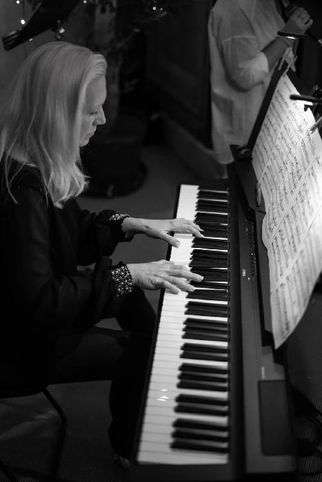
Ve čtvrtek 30. května 2024 jsme vystupovali v Domě Hudby na slavnostním koncertě ZUŠ Havlíčkova, který byl pořádán v rámci ZUŠ Open.
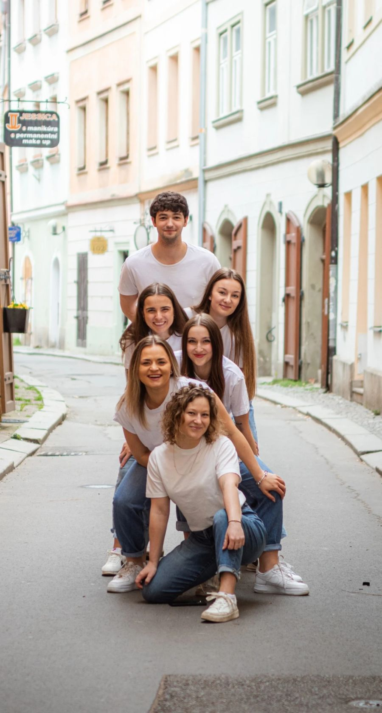
Naším prvním velkým koncertem byl absolventský koncert členů sexteta, který jsme pořádali 12. června 2023 v historickém sále magistrátu města Pardubic.
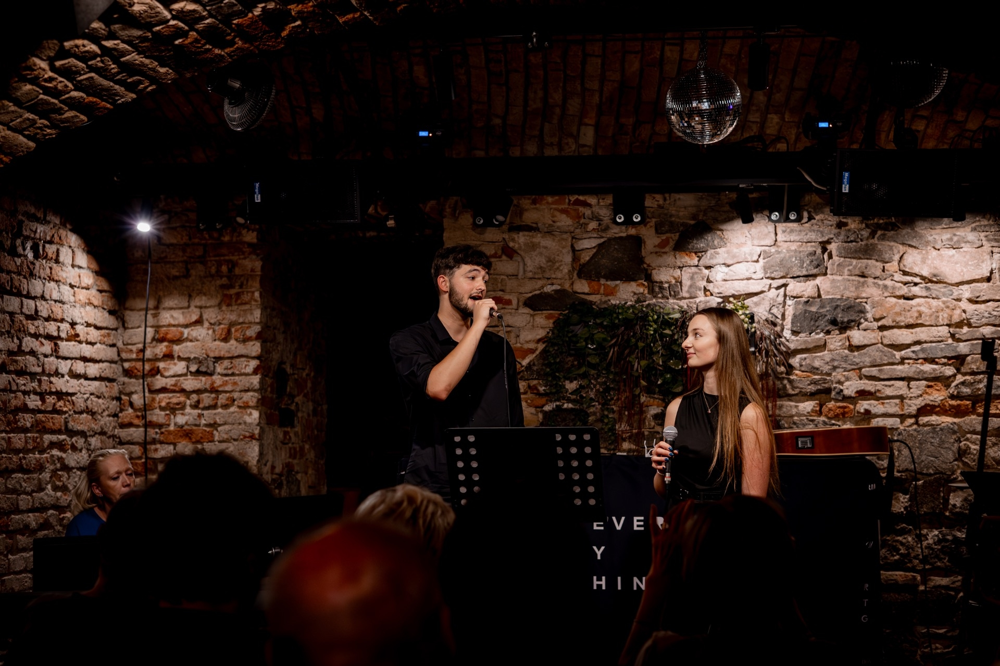
Nejčastěji vystupujeme v našem oblíbeném podniku v Pardubicích v baru Everything. Rádi zde vymýšlíme jak velké koncerty, tak pohodové letní hudební posezení na terásce.
V baru Everything je nám jako doma — tady je pár momentek z našich vystoupení.
Vystupujeme především v našem rodném městě v Pardubicích a v blízkém okolí. Není pro nás ale problém za vámi dojet i do vzdálenějších koutů republiky. Spolupráce zakládáme především na vzájemné domluvě a komunikaci. Jsme otevření všemu a všem.
Sociální sítě
Instagram
Fotky, reels a zákulisí ze zkoušek i koncertů
@_gmajor6_ 👥Facebook
Novinky, události a naše komunita
Gmajor6